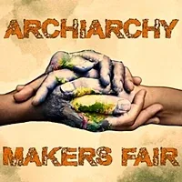
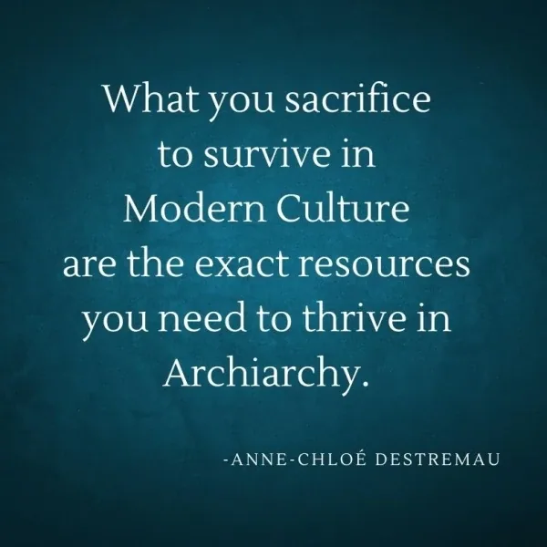
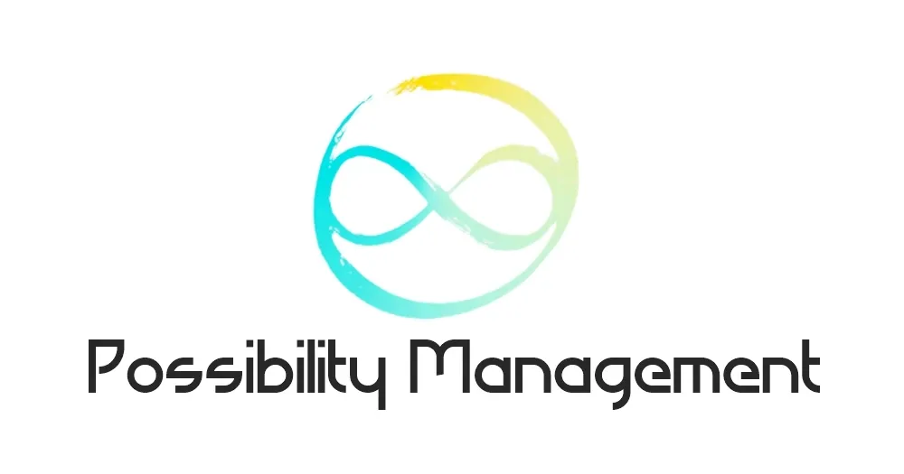

Archiarchy Makers Fair
- …
Archiarchy Makers Fair
- …
- Archiarchy Makers Fair - Edgeworkers enlivening Archiarchy, together.
- WHAT IS ARCHIARCHY? - # Archiarchy is Next Culture- Archiarchy is the regenerative human culture naturally emerging around the world now that matriarchy and - patriarchyhave run their course.- Archiarchy comes to life through archetypally initiated - adult womencreatively collaborating with archetypally initiated- adult men.- Clearly, authentic adulthood - initiationsare key.- Once you can personally - cavitateyour own culture of Archiarchy, you can carry it with you wherever you go. You- neverhave to leave it behind.- It is your birthright and your responsibility (they are the same thing) to consciously live in the culture you would love to live in. - If the culture you want to live in does not already exist, then it is your - callingto create that culture, and your pleasure to share it with anyone interested.- # Makers Of Archiarchy- Unfolding Archiarchy means reinventing every - survival-contexted- Patriarchalgameworld into a regenerative Archiarchal context, and inventing every facet Archiarchy that does not yet exist - out of nothing!- From our research, there has never been a radically-responsible initiation-centered culture ever on Planet Earth. - Nobody knows how Archiarchy goes! But not knowing does not stop a group of genius committed edgeworkers to go on the - adventureof figuring it out!- While we don't know how Archiarchy goes, we have found - the wayto Archiarchy. It includes such endeavors as:- Sourcing Adulthood.
- Becoming a Possibilitator.
- Engaging and delivering AuthenticAdulthoodInitiatoryProcessesfor individuals and different groups of people.
- Building and inhabiting new Gaian Gameworldsthat make the existingGameworldsirrelevant. (They are already 'obsolete'.)
- Implementing Archiarchal Economics (archived — not captured).
- Becoming a New Refugee.
- Activating Whole Permaculture (archived — not captured)as an global alternative to the collapse of food shortages to come.
- Upgrading human thoughtware.
- Building infrastructures - mostly memetic infrastructure - for the emergence of regenerative cultures.
- Living in your self-made Nanonation.
- Joining the UNN (United Network of Nanonations).
-
Gaian Gameworlds- Phase 1 of Archiarchy is already complete: the culture of Archiarchy now exists as a true option to choose from on Earth. - Phase 2 of Archiarchy now begins: inhabiting Archiarchy together. This is where, you, - Archan- Gameworld Builderscan truly shine.- Archiarchy is lived through - cavitating,- holding,- navigatingand deepening the- contextof Gaian Gameworlds.- Gameworlds are the social systems through which human beings interact. - Human beings do not interact with the world as it is, we interact through gameworlds. - Each Gameworld has a - context,- distinctions,- values, rules-of-engagement (how to play the game), and an intended- purpose.- In every gameworld you did not build or did not consciously choose to play, you are being used as a pawn in someone else's gameworld. - The shocking realization is that if any gameworld you play in is not repairing, renewing, and revitalizing Gaia, it is killing Life. - Almost every modern-culture gameworld is a parasite on Gaia. - A ' - Gaian Gameworld' is a:- high-drama,- winning-happening, infinite game, contexted in authentic adulthood healing and initiatory processes and- radical responsibilitywhile providing value to- Gaia.- Archiarchy Maker Fair is centered on providing clarity, skills and experience in building and activating your 'Gaian Gameworld'. - We are coming together to empower each other to more effectively and abundantly nurture and heal Gaia. - The makers of Archiarchy are us! - Harbigarrr! (A Archan cry from - Conscious Pirates)
- Sourcing
- WHO ARE THE MAKERS? - The Makers Of Archiarchy Are You! - You are: - a spaceholder for a circle
- a community leader
- a new refugee
- a whole permaculturist (archived — not captured)
- a trainer
- a health practitioner
- an initiator
- a healer
- a possibilitator
- a possibility manager
- a coach
- an alternative schoolfacilitator
- a memetic engineering
- You are - at the Edgeof what you can do alone.- You are ready to scale up your effectiveness, but you don't know where to start. This indicates the beginning of a new gameworld for you. - With painful observation, you have seen that without a gameworld into which your friends, clients, participants... the people of your Circle can join, they go back over and over to their default lifestyle in modern culture. - You realize that replacing yourself in your current 'job' is a necessity for Archiarchy to thrive. There is so much to discover, and if you don't replace yourself, what you used to deliver is lost for the next generations. - You know that the - nonmaterial valuethat you deliver, someone else can learn it.- You want that each person in your Circle learns to deliver and share their specific nonmaterial value. - You have experienced that there are context and gameworlds that empower the potential in each person. You want to learn how to cavitate, hold, and navigate those gameworlds. - # You Seek New Skills- Creating and evolving culture is a set of - skills.- The skills that we have developed in modern culture educating teaches us to thrive in modern culture. Most of the skills that you will need to live in your culture, you might not have - yet! - The Archiarchy Maker Fair focuses on spaceholder and gameworld builder skill-building. - Our wish is to practice these new skills together with you until we become absurdly effective. - These are skills such as: - running a group-intelligence-empowered circle
- holding spacefor a edge-discovery space
- distinguishing emotional reactivityso it does not block the creation process
- seeing the edgeof a gameworld, going there and experimenting at the edge
- make proposalsandtransformational proposals
- negotiating intimacy
- scanning and empowering the knacks, potential, skills and intelligence of each unique human being in your Circle
- building Your CirclethroughLegends Making
- ongoing deepening the contextof your gameworld
- and landing that new context in already participating members
- exiting hierarchicaland leadership habitual pattern
- being a guardianof an extraordinarily empowering space
- shift from a sharing Circle to Creative CollaborationCircle
- build a Gameworld Builder Trainer Training within your gameworld for them to build the next gameworld
- sharpening your Gameworld Consultant- abandoning the idea that you need to know
- going nonlinear
- being unreasonable
- taking a standfor something that other people might not understand
- and much more...
- These skills, and others that could practice in small group during the Maker Fair. - # Courage- It takes courage to join a group of strangers to practice skills that you maybe have never of before today. - Joining the Archiarchy Maker Fair, you admit that you do not know everything, that you will make mistake, and try things... some of it will work... some of it won't... - In the Archiarchy Maker Team, we are okay 'looking bad'. We celebrate to find the edges of our competence and knowledge. - There, something else completely different from what we know is possible.
- a spaceholder for a

- WHAT IS A FAIR? - # Small Working Groups- It is possible that you have found that the recent summits and conferences have failed you due to their design which included a number of 'big' speakers plus 'entertainment' that was intended to be, well, 'entertaining', neither of which fulfilled your needs for using your focused time, energy, and attention in close proximity with other Edgeworkers, Bridge-Builders, Initiators, Next-Culture Designers, and Facilitators of transformation to synergize. - The Archiarchy Maker Fair is designed with few Convergences and mainly Divergences. - Both Convervenges and Divergences are spaces from - Torus Technology- a circular radically-responsibility-centered meeting and decision-making technology. More information at the- Torus Technologywebsite.- Convergences are spaces where all participants of the Fair come together for 1-to-2 hours to share what they have created or discovered, to regroup, deepen the context of the Fair and go through group processes. - Divergences are when participants break up into small working groups. Each breakout room has a clear purpose, time limit and spaceholder(s). The divergences are either thought of beforehand or organically emerging during the Fair to fulfill what is needed and wanted in the moment. - We apply the - Rules of Chaosand Chaordic technology to maximize the use of group intelligence while keeping a powerfully clear of context of Radical Responsibility and Creative Collaboration.- # Your Gameworld Takes Center-Stage- Your gameworld (or your soon-to-be gameworld) takes center-stage at the Fair. As main spaceholder for your gameworld, this places you also at the center of the fire of Transformation. - For your gameworld to become something different, - youhave to become something different.- During the Fair, we focus on the individual next steps of each of the gameworlds present. Next steps can be : - Clarifying what is your gameplan.
- Declaring the context of your gameworld.
- Deepening the context of your gameworld.
- Finding your 3Cell.
- Building the websitefor your gameworld.
- Shooting photos your websites.
- Creating short videos to expand the visibility of your context.
- Making longer interviews.
- Going through the necessary Emotional Healing Process in the way of expanding your gameworld.
-
Defining your offers and services.
-
Clarifying what is your

Contact Us
+6285971612991
pmpoland2024.mystrikingly.com
Powered by Possibility Management
NOTE: This website is a Bubble in the Bubble Map of the free-to-play massively-multiplayeronline-and-offline thoughtware-upgrade matrix-building personal-transformation real-life adventure-game called StartOver.xyz. It is a doorway to experiments that upgrade your thoughtware so you can relocate yourpoint of origin and create more possibility. Your knowledge is what youthink about. Your thoughtware is what you useto think with. When you change your thoughtware,you go through a liquid state as your mind reorganizes itself. Liquid states can bring uptransformational feelings and emotions. By upgrading your thoughtware you build matrix to hold more consciousness (archived — not captured) and leave behind a low drama life of reactivity. No one can upgrade yourthoughtware for you. More interestingly, no one can stop you from upgrading your thoughtware. Our theory is that when we collectively build 1,000,000 new Matrix Points wewill change the morphogenetic field of the human race for the better. Please choose responsibly to read this website. Reading thiswhole website is worth 1 Matrix Point. Doing any of the experiments earns you additional Matrix Points. Please use Matrix Code ARCHFAIR.00 to log yourMatrix Point for reading this website on StartOver.xyz. Thank you for playing full out!
Imprint Copyleft Notice Privacy Policy Terms and Conditions
Imprint Copyleft Notice Privacy Policy Terms and Conditions
Creative Commons BY SA 4.0 International
Creative Commons BY SA 4.0 International
StartOver.xyz
StartOver.xyz